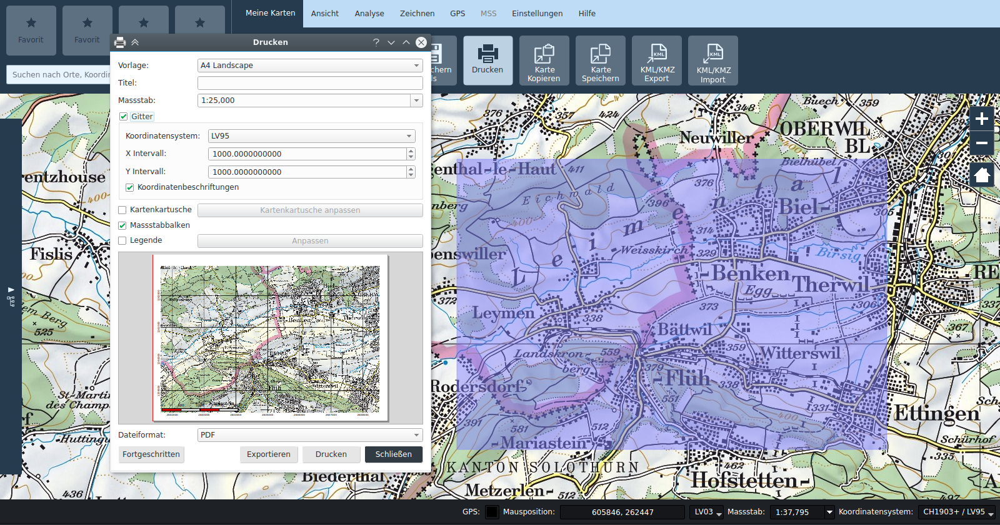
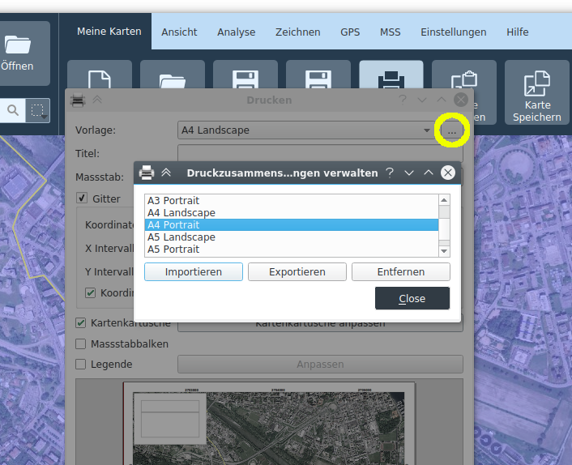

Mappa
Progetti
Le mappe possono essere caricate e salvate come progetti. Viene utilizzato il formato dei progetti QGIS, con estensione *.qgs. I progetti vengono creati sulla base di modelli. All'avvio dell'applicazione, viene automaticamente creato un progetto sulla base di un modello online od offline, a seconda che il computer sia collegato alla rete o meno.
Creazione e salvataggio di mappe
Con le funzioni Nuovo, Apri, Salva e Salva con nome, è possibile creare dei nuovi progetti (sulla base di un modello), aprire progetti esistenti e salvare i progetti.
Certi strumenti creano dei dati che vengono memorizzati nella cartella
Apri progetti
Le mappe salvate (progetti) possono essere caricate con la funzione Apri.
Stampa
La mappa attuale può essere inviata alla stampante tramite la funzione Stampa o salvata in un file.
La stampa si basa su dei modelli. Come impostazione standard, vengono forniti i modelli A0-A6, in formato sia orizzontale che verticale, e un modello Custom.
Una volta scelto il modello, nella finestra della mappa principale viene visualizzato un rettangolo blu semitrasparente che corrisponde all'riquadro da stampare. Nel caso di modelli con formato di pagina fisso, il rettangolo presente nella mappa principale può essere spostato per adattare l'area di stampa. La dimensione del riquadro viene calcolato dal formato della pagina e dalla scala scelta nel dialogo di stampa. Nel caso del modello Custom, il riquadro viene definito numericamente nel dialogo di stampa, e il formato della pagina risultante in base a queste indicazioni.
Durante la stampa, è possibile inserire o rimuovere secondo preferenza degli elementi aggiuntivi come la griglia delle coordinate, il cartiglio della mappa, legenda e il righello della scala. La posizione di questi elementi è definita nel modello.

Finestra di dialogo della stampante
- Modello: scelta del modello di stampa. Viene visualizzata un’anteprima dell’output di stampa.
- Titolo: titolo visualizzato sull’output di stampa.
- Scala: scala di stampa
- Reticolo: se la sezione Griglia è aperta, nello stampato viene posizionato un reticolo.
- Sistema di coordinate: scelta del sistema di coordinate della griglia
- Intervallo X: distanza delle linee del reticolo in direzione X
- Intervallo Y: distanza delle linee del reticolo in direzione Y
- Mostra coordinate: attivazione/disattivazione delle diciture del reticolo
- Cartiglio: attivazione/disattivazione della cartuccia
- Modifica Cartiglio: configurazione della cartuccia
- Barra della scala: attivazione/disattivazione della visualizzazione della scala
- Legenda: attivazione/disattivazione della legenda, tramite il pulsante Configura è inoltre possibile scegliere separatamente quali livelli appaiono nella legenda
- Formato: scelta del formato per la funzione di esportazione del file
Modelli di stampa
I modelli contenuti nel progetto possono venir gestiti tramite il Gestore modelli, attivabile con il pulsante situato a destra del campo di selezione del modello. Nel gestore i modelli possono venir importati, esportati e rimossi dal progetto.

Cartuccia mappa
In questa finestra è possibile definire il contenuto della cartuccia. Nei campi di immissione è depositata la funzione del testo. Se è attivata la casella di controllo checkbox Esercizio, vengono visualizzate le indicazioni per l’esercizio nella cartuccia.
Inoltre è possibile esportare e importare il contenuto del cartiglio come file XML a sé stanti dal dialogo di modifica del cartiglio.
Output di stampa
- Esporta: viene creato un file nel formato scelto.
- Stampa: tramite la schermata di stampa è possibile scegliere una stampante configurata e avviare l’output.
- Chiudi: la finestra di dialogo di stampa viene chiusa.
- Avanzato: richiamo della funzionalità di layout avanzata
Copia mappa / Salva mappa
Queste funzioni consentono di salvare il riquadro della mappa visibile della mappa negli appunti o in un'immagine. Viene sempre salvato il contenuto identico a quanto è mostrato nella finestra della mappa.
La funzione Salva mappa apre un dialogo che permette di selezionare il percorso e il tipo di file (PNG, JPG, etc.) di uscita. Un file "world" (con estensione PNGW, JPGW, etc.) salvato nella stessa cartella georeferenzia l’immagine.
Esportazione e importazione KML/KMZ
Il contenuto della mappa può essere esportato come KML o KMZ. Immagini, livelli raster e simboli MSS possono solamente venir esportati nel formato KMZ.
I file KML/KMZ possono anche essere importati in KADAS.
Nota: KMZ e KML sono formati di esportazione che possono comportare delle perdite e, pertanto, non sono adatti allo scambio tra utenti di KADAS. A questo scopo è necessario utilizzare il formato nativo *.qgs.
GPKG Esportazione e importazione
Il GeoPackage (GPKG) KADAS è un formato di file basato su SQLite, che raggruppa in un unico file sia i geodati locali contenuti in un progetto che il progetto stesso, offrendo così la possibilità di comodamente scambiare progetti e dati.
Quando si esporta, è possibile scegliere quali geodati devono essere scritti nel GeoPackage, il progetto salvato nel GPKG caricherà i dati direttamente dal GPKG. Si può anche decidere se un GPKG esistente debba essere aggiornato o completamente sostituito. Nel primo caso, i dati esistenti rimangono nel GPKG, anche se non sono referenzati dal progetto.
Durante l'importazione, un progetto KADAS viene cercato e aperto nel GPKG, e dati georeferenziati dal GPKG vengono caricati direttamente dallo stesso.